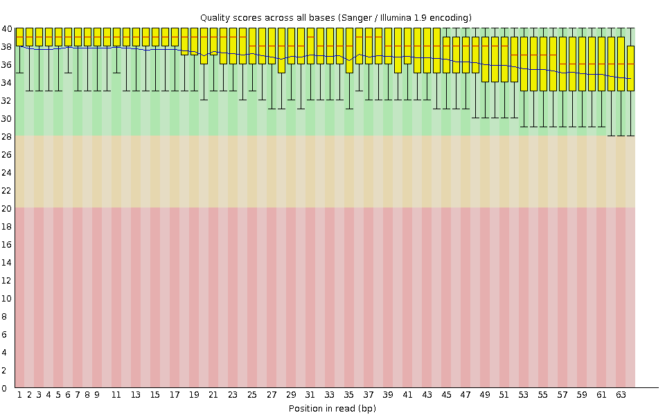
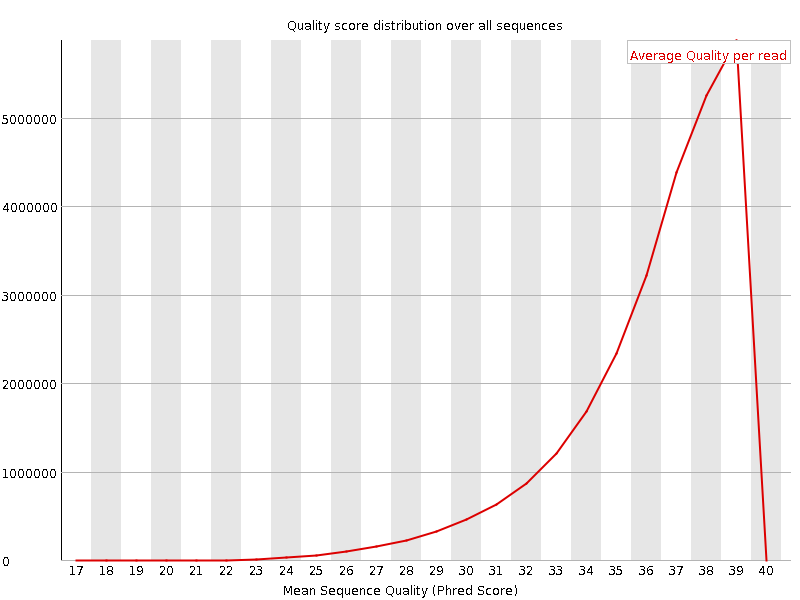
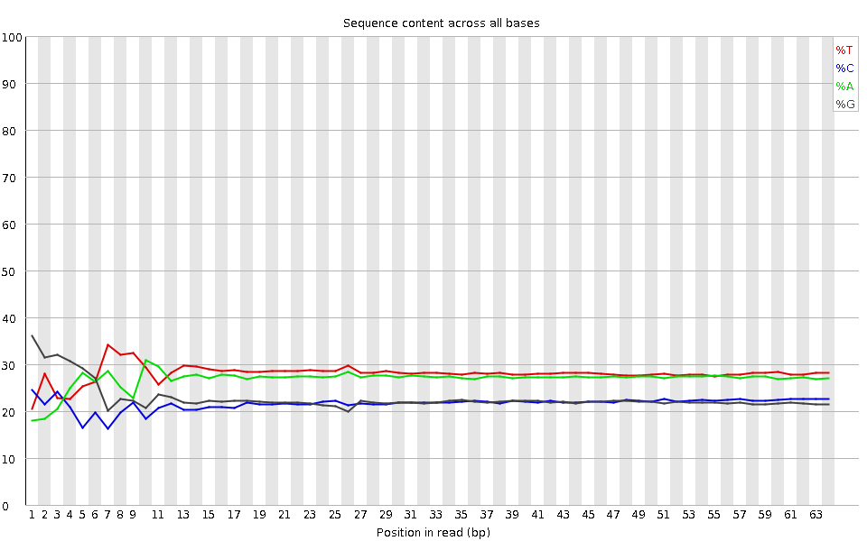
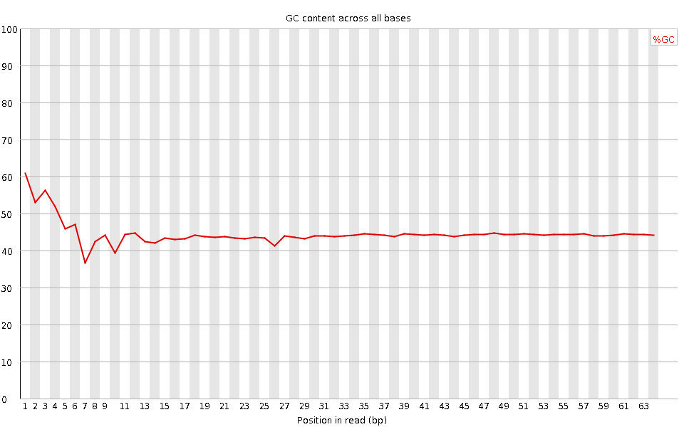
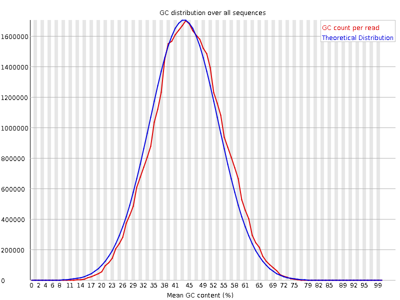
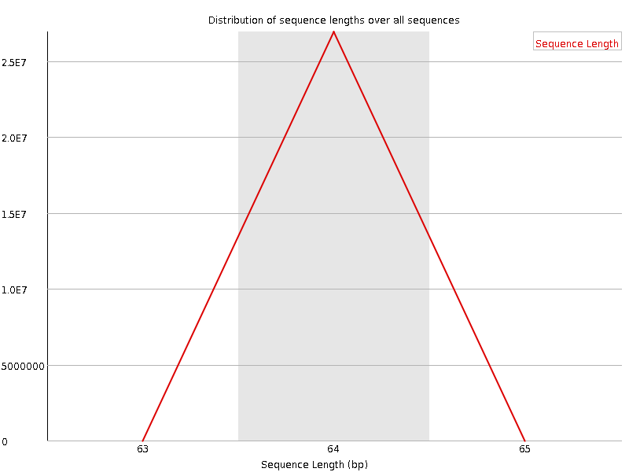
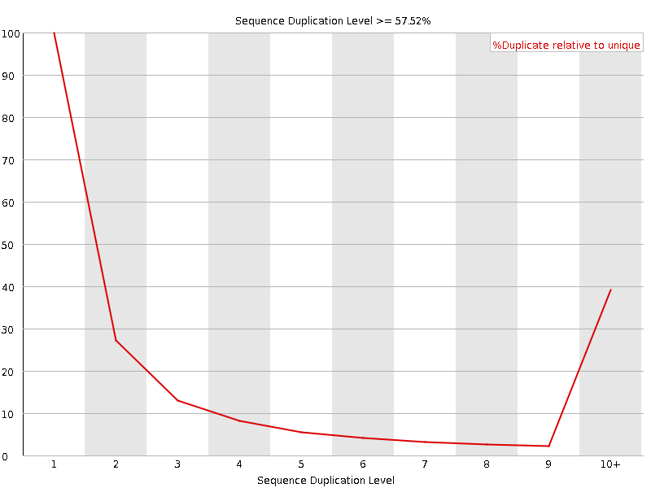
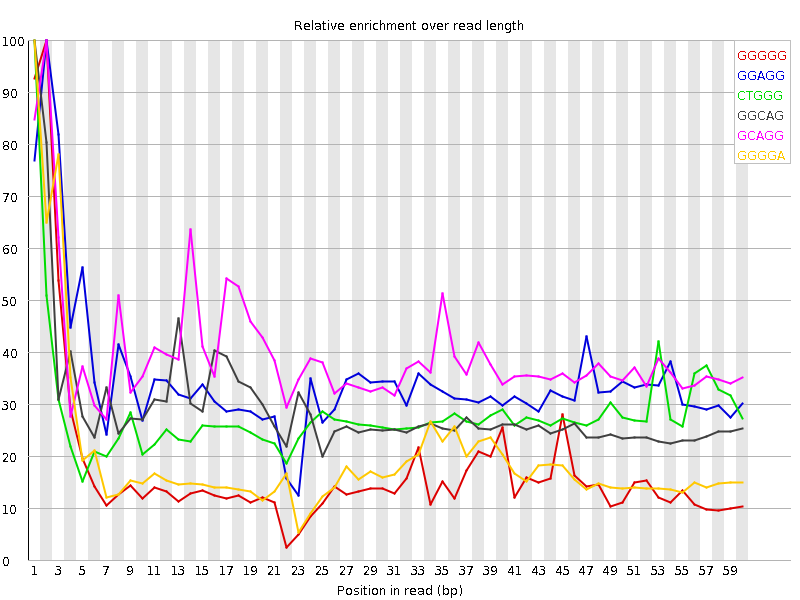

![[OK]](Icons/tick.png) Basic Statistics
Basic Statistics
| Measure | Value |
|---|---|
| Filename | SRR315301_pe_1.f.fastq |
| File type | Conventional base calls |
| Encoding | Sanger / Illumina 1.9 |
| Total Sequences | 26924912 |
| Filtered Sequences | 0 |
| Sequence length | 64 |
| %GC | 44 |
Per base sequence quality

Per sequence quality scores

![[WARN]](Icons/warning.png) Per base sequence content
Per base sequence content

![[FAIL]](Icons/error.png) Per base GC content
Per base GC content

Per sequence GC content

Per base N content

Sequence Length Distribution

Sequence Duplication Levels

Overrepresented sequences
No overrepresented sequences
Kmer Content

| Sequence | Count | Obs/Exp Overall | Obs/Exp Max | Max Obs/Exp Position |
|---|---|---|---|---|
| GGGGG | 2355275 | 2.313025 | 13.346511 | 2 |
| GGAGG | 2737150 | 2.2743301 | 6.535204 | 2 |
| CTGGG | 2632960 | 2.2044556 | 7.8407135 | 1 |
| GGCAG | 2339095 | 2.0419176 | 6.958038 | 1 |
| GCAGG | 2313940 | 2.0199585 | 5.0873895 | 2 |
| GGGGA | 2408670 | 2.0013924 | 10.190801 | 1 |
| GGGAG | 2366125 | 1.9660408 | 7.234665 | 1 |
| GGGCA | 2243605 | 1.9585594 | 6.1283846 | 1 |
| GCCAG | 2132415 | 1.955679 | 5.006096 | 1 |
| GGGAA | 2772375 | 1.9490504 | 5.908367 | 1 |
| GGGTG | 2309390 | 1.8404281 | 8.326192 | 2 |
| GCTGG | 2189390 | 1.8330748 | 5.8360763 | 1 |
| TGGGG | 2277845 | 1.8152891 | 7.9283648 | 1 |
| GTGGG | 2189015 | 1.7444977 | 9.537372 | 1 |
| GGGGT | 2172870 | 1.731631 | 8.69581 | 3 |
| GGGCT | 1951995 | 1.634315 | 5.546471 | 3 |
| GGGGC | 1469235 | 1.5158821 | 6.846069 | 2 |
| TGGGT | 2263385 | 1.4637369 | 5.2398424 | 2 |
| CGGGG | 1404370 | 1.4489577 | 12.017299 | 1 |
| GGTGT | 2028775 | 1.3120139 | 5.8713474 | 3 |
| GGGTT | 1855415 | 1.1999013 | 5.3773956 | 3 |
| GGCGG | 745515 | 0.7691845 | 5.767994 | 1 |
| GCGGG | 649470 | 0.6700902 | 5.949066 | 1 |
| CGGGT | 620050 | 0.5191392 | 5.0169916 | 1 |